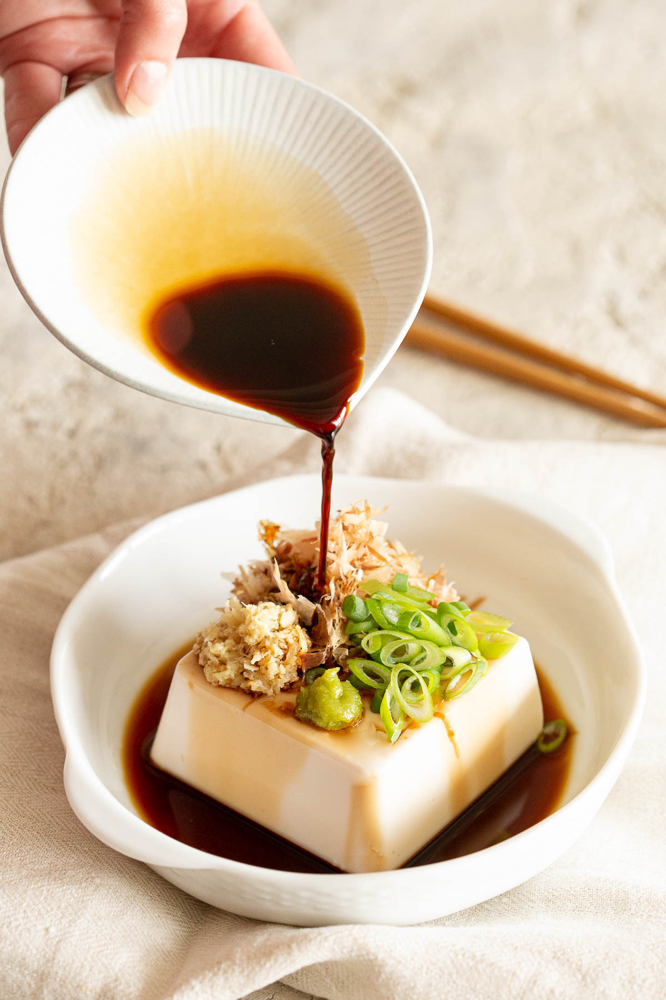

Hiyayakko

Description
Hiyayakko (written in Japanese as 冷奴 or ひややっこ) translates as chilled tofu or cold tofu. Hiya means chilled, and
yakko refers to the traditional square block shape of the tofu.
The small square of soft or silken tofu is served chilled, most often topped with staple Japanese toppings like soy sauce, sliced green onions / spring onion, bonito flakes, ginger (or myoga) and wasabi.
Ingredients
- 200g silken tofu (cut to square)
- 2 tbsp soy sauce (sub 1 tbsp mentsuyu and 1 tbsp dashi stock
- 1 tsp ginger (grated and heaped, sub myoga)
- 1 spring onion/green onion (chopped)
- 2 tbs bonito flakes/katsuobushi
- 1/2 tsp wasabi
Steps
-
Carefully place the silken tofu into a small dish and drizzle over the soy sauce.
200 g silken tofu, 2 tbsp soy sauce
-
Place your favourite toppings on top. We recommend bonito flakes, spring onion, ginger and wasabi. More topping ideas below in the notes!
1 tsp ginger, 1 spring onion / green onion, 2 tbsp bonito flakes / katsuobushi, ½ tsp wasabi
-
To cut the tofu, use your chopsticks pressed together. Slice into bite size pieces and enjoy!